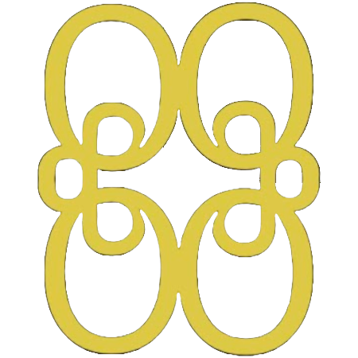

Idén bakom denna server är att i stort sett allt ska vara tillåtet, så länge du är respektfull och inte förstör för andra spelare så kan du bygga den där stora statyn eller en komplex redstone-lösning. Valet är ditt. Välkommen in!
Servern är öppen 24/7 och kör alltid den senaste versionen av Minecraft.
4QS använder Simple Voice Chat för att möjliggöra proximity voicechat inuti Minecraft. För att kunna använda det måste du installera moddet.
Varför har vi detta? Jo de är för att man ska kunna prata med andra spelare utan att nödvändigvis behöva sitta i samma discordkanal som ett exempel.
Titta på denna guide för hjälp med installation: YouTube Guide